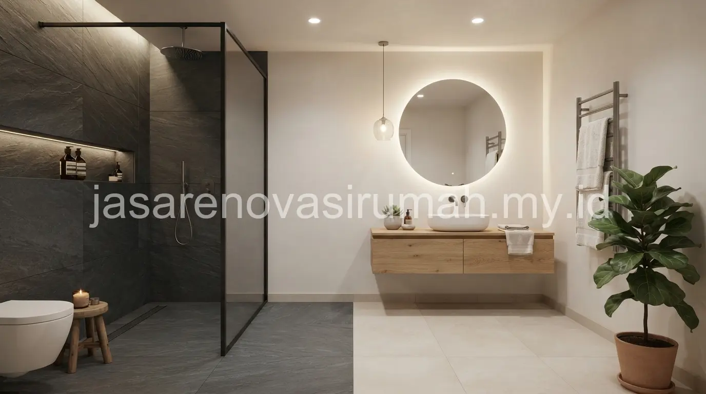
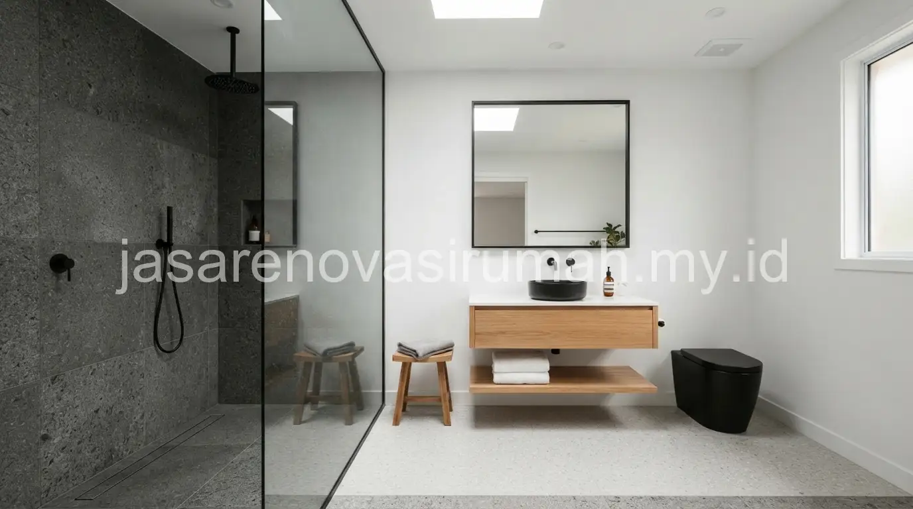

Desain kamar mandi minimalis modern umumnya menerapkan konsep kering dan basah yang dipisahkan partisi kaca, material lantai anti licin, serta palet warna netral agar ruangan terlihat bersih dan lapang meski berukuran terbatas.
Pemisahan area kering dan basah bukan hanya soal estetika, tetapi juga membantu menjaga kebersihan dan mengurangi risiko lantai licin di area yang tidak terkena air secara langsung.
Apa Perbedaan Konsep Kamar Mandi Kering dan Basah, dan Mana yang Lebih Cocok?
Kamar mandi basah membiarkan seluruh area terkena air termasuk area wastafel, sementara kamar mandi kering memisahkan area shower dengan partisi kaca sehingga area lain tetap kering sepanjang waktu.
Konsep kering lebih disarankan untuk kamar mandi berukuran kecil hingga sedang karena membuat ruangan terasa lebih rapi dan wangi.
Sementara itu, konsep basah penuh masih umum digunakan pada kamar mandi berukuran besar atau kamar mandi servis yang tidak terlalu mengutamakan estetika.
Pemilihan konsep ini sebaiknya disesuaikan dengan kebiasaan penghuni rumah, misalnya apakah lebih sering menggunakan shower atau bak mandi (bathtub).
Material Apa yang Direkomendasikan agar Lantai Kamar Mandi Aman dan Tidak Licin?
Keramik dengan permukaan bertekstur (anti-slip) dan tingkat porositas rendah adalah pilihan yang paling disarankan untuk area basah pada kamar mandi minimalis modern.
Berikut perbandingan material lantai kamar mandi yang umum digunakan:
| Material Lantai | Karakteristik | Cocok Untuk |
|---|---|---|
| Keramik anti-slip | Permukaan bertekstur, tidak licin saat basah | Area shower dan area basah lainnya |
| Homogeneous tile | Permukaan halus, elegan, perlu tambahan karpet anti-slip | Area kering seperti dekat wastafel |
| Batu alam (andesit) | Tekstur alami, sedikit kasar, tahan lama | Kamar mandi outdoor atau semi-outdoor |
| Vinyl anti air | Ringan, hangat dipijak, mudah dipasang | Renovasi cepat tanpa bongkar lantai lama |
Selain lantai, dinding area shower juga sebaiknya menggunakan keramik dengan nat rapat dan lapisan waterproofing yang baik agar air tidak merembes ke ruangan sekitar dalam jangka panjang.
Bagaimana Menata Kamar Mandi Berukuran Kecil agar Tetap Terasa Lapang?
Kunci utamanya adalah memilih sanitari berukuran compact, memaksimalkan pencahayaan, dan membatasi jumlah warna serta motif pada material yang digunakan.
Beberapa strategi yang bisa diterapkan pada kamar mandi kecil:
- Gunakan wastafel gantung (wall-hung) dibanding wastafel dengan kabinet besar untuk menghemat ruang lantai.
- Pilih partisi kaca transparan dibanding tirai shower agar ruangan terlihat lebih menyatu dan luas.
- Maksimalkan pencahayaan dengan lampu downlight dan jika memungkinkan tambahkan ventilasi atau jendela kecil untuk sirkulasi udara alami.
- Gunakan cermin berukuran besar di atas wastafel untuk memantulkan cahaya dan memberi ilusi ruang lebih dalam.
Prinsip efisiensi ruang ini sejalan dengan pendekatan pada desain interior kamar tidur minimalis yang juga mengutamakan kesederhanaan dan kelapangan visual meski pada ruangan berukuran terbatas.
10 Inspirasi Konsep Kamar Mandi Minimalis Modern
Berikut ragam konsep yang bisa disesuaikan dengan ukuran dan anggaran renovasi kamar mandi Anda:
- Kamar mandi kering-basah dengan partisi kaca bening.
- Kamar mandi monokrom hitam-putih dengan aksen keramik heksagonal.
- Kamar mandi dengan dinding batu alam abu-abu.
- Kamar mandi dengan wastafel gantung dan cermin bulat besar.
- Kamar mandi bergaya Japandi dengan aksen kayu tahan air.
- Kamar mandi dengan shower rain (rain shower) minimalis.
- Kamar mandi dengan tanaman indoor tahan lembap di sudut ruangan.
- Kamar mandi dengan pencahayaan LED tersembunyi di cermin.
- Kamar mandi dengan keramik motif marmer untuk kesan mewah.
- Kamar mandi kecil tanpa bak mandi, hanya shower area compact.

Untuk hasil yang lebih presisi sesuai ukuran dan sistem plumbing rumah Anda, konsultasikan konsep ini dengan jasa desain interior terbaik yang dapat membantu menata ulang tata letak sanitari secara langsung di lokasi.
Kesalahan Umum Saat Mendesain Kamar Mandi Minimalis
Kesalahan yang paling sering terjadi adalah mengabaikan kemiringan lantai menuju saluran pembuangan, sehingga air menggenang dan membuat lantai kamar mandi lebih licin serta rawan berlumut.
Kesalahan lain yang perlu dihindari:
- Tidak memasang lapisan waterproofing yang memadai sebelum pemasangan keramik dinding dan lantai.
- Memilih ukuran wastafel atau kloset yang terlalu besar untuk ruangan berukuran kecil.
- Mengabaikan sirkulasi udara sehingga kamar mandi lembap dan mudah berjamur.
Pada akhirnya, desain kamar mandi minimalis modern yang baik memprioritaskan keamanan, kebersihan, dan efisiensi ruang, bukan sekadar tampilan estetik semata.
Konsultasikan kebutuhan renovasi kamar mandi Anda dengan jasa desain interior dan lihat referensi tambahan pada portofolio interior kami sebelum menentukan konsep final.